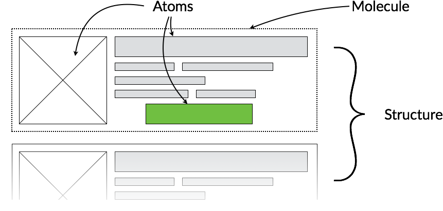

Atomic CSS is a guideline to write modular styles, projecting different levels of complexity on a (bio-) chemical scale. This results in low selector specifity and allows you to compose complex entities out of simple elements.
Head over to the annotation reference section to get detailed information about the available entity types.
Nucleus extracts it's needed information not only from the source code itself, but also from the DocBlock-annotations preceding the style elements. Usually, at least a type needs to be specified for an element that should appear in the style guide.
The value of the annotation may be a single line, or multiple lines indented by at least one space (starting on a new line).
/**
* @atom Button
* @section Navigation > Buttons
* @description
* Buttons for various purposes.
* @modifiers
* .button--alert an alert button
* @markup
* <button class="button">A button</button>
* <button class="button button--alert">
* An alert button
* </button>
*/
.button {
/* ... */
&.button--alert { /* ... */ }
}
/**
* This is the prefered way to set the description.
* Since this DocBlock is missing the @section
* annotation, it would be shown in the generic
* section "Other". Please note the empty line
* after this block of text.
*
* @nuclide Language
*/
$config--lang: "en"
If no @section is set, it will be set to "Other". To nest sections, separate the levels by ">" like shown above. In addition to @section and @description, some element types have more annotations available or even a short version to define then.
For every entity type besides @nuclide, @mixin and @color, the @markup annotation is available. This is where you should provide the minimal HTML to use that element, which is also used to generate the preview of the element.